| [Top][Contents] |
LilyPond — Nouveautés
|
Ce document recense les modifications et les nouvelles fonctionnalités de LilyPond pour la version 2.26.0 (depuis la 2.24). |
Note : Chaque nouvelle version de LilyPond peut comporter des
changements de syntaxe, ce qui peut exiger de modifier les fichiers que
vous avez écrits avec des versions précédentes, de telle sorte qu’ils
restent fonctionnels avec les nouvelles versions. Afin de mettre à jour
vos fichiers, il est fortement conseillé d’utiliser
l’utilitaire convert-ly distribué avec LilyPond et qui est
abordé dans Mise à jour
avec convert-ly. convert-ly est capable de réaliser la
plupart des modifications de syntaxe automatiquement. Les utilisateurs
de Frescobaldi peuvent lancer convert-ly directement à partir
du menu de Frescobaldi en faisant « Outils > Mettre à jour avec
convert-ly… ». D’autres environnements prenant en charge LilyPond sont
susceptibles de fournir un moyen graphique de lancer
convert-ly.
| Modifications majeures de LilyPond | Modifications majeures de LilyPond | |
| Nouveautés en matière de notation musicale | Nouveautés en matière de notation musicale | |
| Nouveautés en matière de notation spécialisée | Nouveautés en matière de notation spécialisée | |
| Autres améliorations diverses | Autres améliorations diverses |
| [ << Top ] | [Top][Contents] | [ Nouveautés en matière de notation musicale >> ] |
| [ < Top ] | [ Up: Top ] | [ Notes à propos de la compilation des sources et à l’attention des empaqueteurs > ] |
Modifications majeures de LilyPond
- Les marges sont désormais plus larges, suivant ainsi les mises en pages
de nombreux éditeurs, et conformément aux recommandations d’Elaine
Gould.
Pour retrouver les mêmes réglages que précédemment, notamment dans le but de conserver la mise en page après mise à jour d’une partition à la version 2.26.0, il suffit d’ajouter le code suivant :
\paper { top-margin = 5\mm bottom-margin = 6\mm top-system-spacing.basic-distance = 1 top-markup-spacing.basic-distance = 0 left-margin = 10\mm right-margin = 10\mm inner-margin = 10\mm outer-margin = 20\mm binding-offset = 0\mm } - Au lieu de générer des sorties PostScript ou SVG par lui-même, LilyPond
peut désormais utiliser la bibliothèque Cairo pour produire ses
résultats. Il est ici fait référence au « moteur Cairo » qui peut être
activé par l’option
-dbackend-cairoen ligne de commande. Cette fonctionnalité est opérationnelle pour tous les formats de sortie (PDF, SVG, PNG, PostScript) et apporte vitesse et amélioration du rendu SVG en particulier. Néanmoins, les fonctionnalités des moteurs par défaut ne sont pas encore toutes implémentées. Sont entre autre absents le plan des PDF, l’option-dembed-source-codepour le PDF et la propriétéoutput-attributespour le SVG. - Les distances entre la clef et la métrique ainsi qu’entre la clef et
l’armure sont désormais calculées différemment. Par voie de conséquence,
on obtient un meilleur espacement pour des clefs imposantes, comme
\clef "GG", ou très fines comme\clef "petrucci-c3".L’image suivante illustre les modifications apportées aux positionnements. Le pourcentage indique la différence d’espacement entre la clef et la métrique, et entre la clef et l’armure.
![[image of music]](6c/lily-7b6da4f7.png)
Notez bien que, comme précédemment, c’est la clef la plus large d’un regroupement de portées qui détermine le positionnement horizontal de toutes les clefs d’un système. Ceci signifie, par exemple, qu’une partition pour piano comportant une clef de sol et une clef de fa ne sera en rien modifiée.
Pour retrouver les valeurs par défaut antérieures, quelle qu’en soit la raison, il suffit d’ajouter
\override Staff.Clef.space-alist.time-signature = #'(minimum-space . 3.5) \override Staff.Clef.space-alist.key-cancellation = #'(minimum-space . 3.5) \override Staff.Clef.space-alist.key-signature = #'(minimum-space . 4.2)à la partition.
- Le mode majeur LilyPond de l’éditeur de texte GNU Emacs fourni au
travers du paquetage Emacs Lisp
lilypond-mode.ela été renommé deLilyPond-modeenlilypond-mode. Le préfixe d’espace de noms est désormais tout en minuscules, passant deLilyPond-àlilypond-et, par conséquent, toutes les fonctions, variables, etc. ont toutes leur préfixe en minuscules. Ce changement est apporté pour se conformer aux conventions de nommage d’Emacs et, plus particulièrement, afin que le nom du mode corresponde au paquetage qui le fournit. Il en sera ainsi plus facile aux nouveaux utilisateurs d’utiliser LilyPond au sein d’Emacs.Ceci pourrait perturber certaines configurations d’Emacs existantes sans une simple adaptation du fichier d’initialisation d’Emacs. Voici comment, par exemple, spécifier l’utilisation du
lilypond-modeà l’aide de la macrouse-packaged’Emacs :(use-package lilypond-mode :ensure nil :mode "\\.\\(ly\\|ily\\)$")
| Notes à propos de la compilation des sources et à l’attention des empaqueteurs |
Notes à propos de la compilation des sources et à l’attention des empaqueteurs
Cette section est destinée aux enthousiastes qui compilent LilyPond à partir des sources et aux empaqueteurs qui préparent LilyPond pour les différentes distributions. Si vous ne faites partie d’aucun de ces groupes, vous pouvez aisément passer ce qui suit.
- LilyPond requiert désormais Guile 3.0.7 ou supérieur. Le bytecode
des fichiers .scm est par défaut généré. Si tel n’est pas votre
désir, qu’elle qu’en soit la raison, ajoutez l’option
BYTECODE=noà la commandemake.
Nouveautés en matière de notation musicale
Améliorations de la représentation des hauteurs
- La nouvelle commande
\approximatePitchpermet de créer des notes de hauteur approximative.\relative c'' { e4 f g \approximatePitch c }
![[image of music]](08/lily-586384aa.png)
- Certains faux changements de clef ont été réglés.
{ R1 \clef treble R1 }
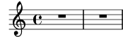
Améliorations en matière de rythme
- La commande
\timeprend désormais en charge les métriques complexes qui auparavant nécessitaient\compoundMeter, même si la syntaxe est quelque peu différente. La commande\compoundMetera été renommée en\timeAbbrev.{ \time #'((2 2 2 3) . 8) \repeat unfold 9 c'8 }
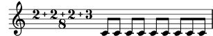
- La nouvelle commande
\submeasureBarsOnpermet d’afficher automatiquement des barres de mesure entre les composants d’une métrique alternative stricte (non montré ici), ou lorsque spécifié par les réglages de la nouvelle propriété de contextesubmeasureStructureou par les pulsations de l’argument optionnel de la commande\time.{ \submeasureBarsOn \time #'((3 4) (3 4) (4 3 4)) 25/16 \repeat unfold 25 c'16 }
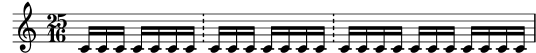
- La nouvelle commande
\polymetricsimplifie la notation d’une polymétrie dont la longueur des mesures est alignée lorsque sont réglées les propriétés d’échelonnement de la métrique dans des contextes différents deTiming.<< \new Staff { \scaleDurations 4/6 { \context Staff \polymetric \time 6,6,6 18/16 \repeat unfold 18 c'16 } } \new Staff { \time 3/4 c'4 4 4 } >>
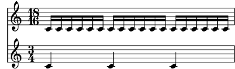
- Les ligatures automatiques pour une métrique à 2/8 ont été modifiées de
sorte à autoriser une ligature sur l’entièreté de la mesure.
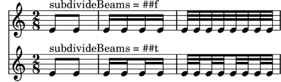
-
\enablePolymetera été renommé en\enablePerStaffTimingafin d’éviter toute confusion puisqu’elle n’est recommandée que dans certains cas particuliers de polymétrie. - La propriété
TimeSignature.time-signatureremplace l’ancienne propriétéfraction. Cette nouvelle propriété est plus généraliste et autorise des dérogations, ce qui permet certaines adaptations sans devoir toucher la propriétéstencil.{ \once \override Timing.TimeSignature.time-signature = #'(-1 . 12) R1 }
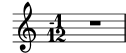
- La commande
\timeaccepte désormais un nombre rationnel au numérateur. L’objet graphiqueTimeSignatureet la fonction markup\compound-meterdisposent de nouvelles propriétés permettant de contrôler le style de la partie fractionnelle.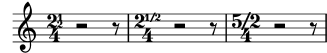
- La commande
\timeaccepte désormais un nombre rationnel en dénominateur afin de prendre en charge des métriques dont le temps est supérieur à la ronde.{ \override Timing.TimeSignature.denominator-style = #'note \time #'(4 . 1/2) e'\breve f' g' a' }
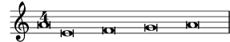
- L’objet graphique
TimeSignatureet la fonction markup\compound-meteracceptent désormais des métriques de style nombre sur note à l’aide dedenominator-styleet propriétés relatives.{ \override Timing.TimeSignature.style = #'numbered \override Timing.TimeSignature.denominator-style = #'note \once \override Timing.TimeSignature.time-signature = #'(2 . 8/3) \time 6/8 r4. g'8 8 8 }
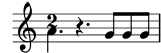
-
\slashedGraceimprime désormais des ligatures barrées.{ \slashedGrace { d'16 e' d' } c'1 \slashedGrace { d16 e'' d' } c'1 }
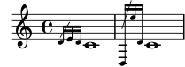
L’utilisation de
beam::slashed-stencilpermet de barrer des ligatures de façon arbitraire. Définirdetails.slash-sideàRIGHTplacera la barre sur la droite de la ligature.{ \override Beam.stencil = #beam::slashed-stencil \cadenzaOn c'16^[ a' c''] c''^[ a' c'] c'_[ a' c''] c''_[ a' c'] \override Beam.details.slash-side = #RIGHT c'16^[ a' c''] c''^[ a' c'] c'_[ a' c''] c''_[ a' c'] }
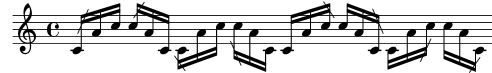
L’apparence de la barre peut se personnaliser par dérogations aux sous-propriétés
detailsover-beam-height,slash-slope,slash-side,slash-stem-fraction,slash-thicknessetslash-X-positions. - La commande
\autoBeamOffinterrompt désormais immédiatement la ligature automatique. Auparavant, ses effets étaient différés lorsque le graveur de ligature automatique était actif. - Il est désormais possible d’aligner par la droite différents types de
barre de mesure.
\new StaffGroup << \new Staff { \textMark "default" b1 } \new Staff { b1 \section } >> \new StaffGroup << \new Staff { \textMark "right-aligned" b1 } \new Staff { b1 \override StaffGroup.BarLine.right-justified = ##t \section } >>
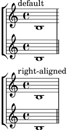
- Désormais, les contrôles de mesure (
|) créent implicitement des contextes. Les développeurs considèrent que cela n’aura aucun impact sur les partitions courantes. N’hésitez pas à signaler tout problème qui ne trouverait pas de solution de contournement évidente. - La nouvelle option
span-all-note-headspermet aux crochets de n-olets d’embrasser toutes les têtes de notes (pas seulement les hampes) comme recommandé par Gould et Ross.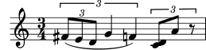
- La subdivision des ligatures automatiques a été retravaillée. Jusqu’à
présent, on pouvait constater de nombreuses imperfections dans la
manière de subdiviser automatiquement des motifs de ligature complexes
en raison de surestimations de la valeur de
beatBase. LilyPond est désormais capable de subdiviser correctement la plupart des motifs de ligature sans utiliser la valeur debeatBasepour limiter la subdivision d’une ligature. La simple activation desubdivideBeamsdivise automatiquement tous les intervalles par défaut. Trois nouvelles propriétés ont été introduites pour permettre d’affiner la subdivision automatique des ligatures :beamMinimumSubdivision,beamMaximumSubdivisionetrespectIncompleteBeams.beamMinimumSubdivisionlimite les intervalles de subdivision de manière identique à ce quebeatBasefaisait auparavant (réduction de la fréquence des subdivisions de ligatures).beamMaximumSubdivisionlimite globalement le nombre de tronçons supprimés aux emplacements de subdivision.respectIncompleteBeamslimite le nombre de moignons lorsque le temps restant ne compléterait pas la métrique de la subdivision. RéglerbeamMinimumSubdivisionà la valeur debeatBasedans tous les cas, y compris lorsquebeatBasevarie implicitement, préserve le comportement antérieur. - Sont désormais disponibles des glyphes de crochets « empilés ». Tous les
éléments d’un glyphe de crochet ont la même largeur, mais sont
verticalement plus compacts.
Ces glyphes sont accessibles à l’aide de
\flagStyleStacked; un\flagStyleDefaultpermet de retrouver le style de crochet standard.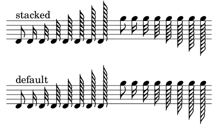
- Le style de
TimeSignature'single-digita été renommé en'single-number.
Améliorations en matière d’expressivité
- Les nouvelles commandes
\chordSluret\nonArpeggiatopermettent de créer des liaisons verticales et des crochets sans détourner l’utilisation de la commande\arpeggio.{ <c' g'>\nonArpeggiato <c' f''>\chordSlur }
![[image of music]](8c/lily-91403e61.png)
- Un nouvel ornement,
bachschleifer, est désormais disponible.{ b' g''\bachschleifer }
![[image of music]](8b/lily-d96b8e7c.png)
- Il est désormais possible de positionner un
Scriptsur la gauche ou sur la droite d’unNoteHead.{ <c' g' c''\atRight \mordent e''>2 }
![[image of music]](9e/lily-082a70dd.png)
- Les soufflets de style Ferneyhough acceptent désormais un cercle
al niente.
{ \override Hairpin.circled-tip = ##t \override Hairpin.stencil = #flared-hairpin b1\< b\> b\> b2 b\< b2 b\! }
![[image of music]](6e/lily-6854be9e.png)
- Sont désormais disponibles deux variantes du signe de respiration :
laltcommaetraltcomma. Ces glyphes représentent respectivement les anciens galbes de « lcomma » et « rcomma » avant leur changement pour un galbe plus courant.{ \override BreathingSign.text = \markup { \musicglyph "scripts.raltcomma" } f'2 \breathe f' | }
![[image of music]](ae/lily-13254891.png)
- L’ondulation d’un objet
TrillSpannerrequiert désormais moins d’espace vertical.
Améliorations en matière de reprises
- Les nouvelles fonctions musicales
\%et\*servent de raccourci à\repeat percentet\repeat unfolded.\%3 \*4 cis''4
![[image of music]](43/lily-463a166e.png)
- Les fins alternatives d’un
\repeat voltane créent plus de barre de mesure invisible. Ceci peut affecter le saut de ligne, l’espacement horizontal et la longueur d’unVoltaBracketlorsqu’une alternative débute ou se termine en l’absence de barre de mesure. Dans le cas d’un changement non désiré, il est possible d’ajouter un\bar ""ou toute autre commande créant un objetBarLineprécisément à ce point. - Grâce à la propriété
printInitialRepeatBar, il est désormais possible d’afficher automatiquement une barre de reprise même lorsqu’elle intervient en début de pièce.![[image of music]](23/lily-68929dc1.png)
- Le positionnement du numéro de volta relativement au crochet de
reprise peut désormais s’ajuster à l’aide de la propriété
volta-number-offsetduVoltaBracket.
Améliorations en matière d’annotations éditoriales
- Les incipits peuvent désormais adopter différents types de
contexte. Ils acceptent aussi un argument optionnel destiné à les
décaler sur la gauche
\score { << \new Staff \with { instrumentName = "MensuralStaff" } { \incipit { c'4 d' } c'4 d' e' f' g'1 } \new Staff \with { instrumentName = "KievanStaff" } { \incipit #2 \new KievanStaff { c'4 d' } c'4 d' e' f' g'1 } \new Staff \with { instrumentName = "TabStaff" } { \incipit \new TabStaff \with { \magnifyStaff 0.5 \override InstrumentName.font-size = 6 } { c'4 d' } c'4 d' e' f' g'1 } >> \layout { indent = 5\cm incipit-width = 2\cm } }
![[image of music]](05/lily-169ff8b3.png)
- Du matériau optionnel peut être indiqué par des crochets englobant la
portée à l’aide de
\startOptionalMaterialet\stopOptionalMaterial.![[image of music]](5a/lily-66b7aaab.png)
- Le
FingerGlideSpannerpermet maintenant de connecter des objetsStringNumberetStrokeFinger.{ \set strokeFingerOrientations = #'(down) b2 \glide -\rightHandFinger #1 \glide -2 \glide \5 e'-\rightHandFinger #1 -2 \5 }
![[image of music]](4d/lily-1970039f.png)
- Un nouveau graveur, le
Toe_heel_engraver(activé par défaut), écoute la variable de contextetoeHeelStylepour fournir les options stylistiques des commandes\rtoe,\ltoe,\rheelet\lheel.music = { f'4\rtoe f'4\rheel f'4\ltoe f'4\lheel \bar "||" } { \music % #'default \set toeHeelStyle = #'standard \music \set toeHeelStyle = #'reversed \music \set toeHeelStyle = #'below \music \set toeHeelStyle = #'circleheels \music }
![[image of music]](70/lily-9f66cc7b.png)
Lorsque le graveur est activé, ces commandes ne se comportent plus comme les objets
Scripthabituels puisqu’ils ne tiennent pas compte des changements de positionnement, autrement dit les ‘^’, ‘_’ et\tweak directionsont ignorés. En cas de nécessité de positionner individuellement une indication de pédalier, les nouvelles commandes standard d’articulation\toe,\vartoe,\heel,\varheelet\heelcircle(qui accède au nouveau glyphescripts.pedalheelcircle) peuvent s’utiliser.{ f'2\toe f'2\vartoe | f'2\heel f'2\varheel | f'1\heelcircle }
![[image of music]](5a/lily-6e3ff290.png)
Désactiver le graveur fait adopter à
\rtoeet ses semblables le comportement qu’ils avaient dans les versions précédentes de LilyPond. - En liaison directe avec le point précédent, quatre nouvelles commandes
de type articulation
\ltoeheel,\rtoeheel,\lheeltoeet\rheeltoe, permettent d’indiquer des substitutions pointe-talon ou talon-pointe. Elles sont influencées par leToe_heel_engraverde la même manière qu’un\rtoeet ses semblables. Les glyphes de talon et de pointe ont été harmonisés quant à leur taille de façon à obtenir un meilleur rendu pour les substitutions.music = { f'4\rtoeheel f'4\rheeltoe f'4\ltoeheel f'4\lheeltoe \bar "||" } { \music % #'default \set toeHeelStyle = #'standard \music \set toeHeelStyle = #'reversed \music \set toeHeelStyle = #'below \music \set toeHeelStyle = #'circleheels \music }
![[image of music]](6a/lily-27802303.png)
- Les objets graphiques
NoteNamesont désormais centrés horizontalement par défaut.
Améliorations en matière de fontes et de mise en forme du texte
- Des têtes de note de forme triangulaire ont été ajoutées à la fonte
Emmentaler. Elles sont utilisables en réglant
NoteHead.styleàarrow.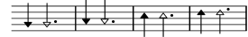
- La nouvelle commande de markup
\bar-linepermet d’imprimer une barre de mesure dans du texte.\markup { \override #'(word-space . 2) \line { Exemples \fontsize #-5 \translate-scaled #'(0 . 2) { \bar-line ":|." \bar-line ".|:" \bar-line ";!S!;" \bar-line "]{|}[" } } }
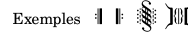
- La syntaxe permettant de modifier les fontes musicales et textuelles a
changé. Au lieu de
\paper { #(define fonts (set-global-fonts #:music "Nom de la fonte musicale" #:brace "Nom de la fonte musicale d'accolades" #:roman "Nom de la fonte à empattements" #:sans "Nom de la fonte sans empattements" #:typewriter "Nom de la fonte monospace")) }ou
\paper { #(define fonts (make-pango-font-tree "Nom de la fonte à empattements" "Nom de la fonte sans empattements" "Nom de la fonte monospace" factor)) }la syntaxe consacrée est dorénavant
\paper { property-defaults.fonts.music = "Nom de la fonte musicale" property-defaults.fonts.serif = "Nom de la fonte à empattements" property-defaults.fonts.sans = "Nom de la fonte sans empattement" property-defaults.fonts.typewriter = "Nom de la fonte monospace" }Contrairement aux anciennes pratiques, la nouvelle syntaxe n’interfère en rien dans la taille des fontes, qui doit se gérer séparément à l’aide de
set-global-staff-sizeoulayout-set-staff-size.La liste associative ne comporte pas de clé
brace; les glyphes d’accolade sont désormais toujours pris dans la fonte musicale. Il est néanmoins possible d’y déroger en utilisant une famille de fontes supplémentaire, comme dans l’exemple suivant (la fonte LilyJAZZ doit alors être disponible) :\layout { \context { \Score \override SystemStartBrace.font.music = "lilyjazz" } } \new PianoStaff << \new Staff { c' } \new Staff { c' } >> \markup \override #'(fonts . ((music . "lilyjazz"))) \left-brace #20Dans la mesure où
fontsest une simple propriété, il est possible de lui porter dérogation sur la base d’un objet graphique, comme par exemple\layout { \override Score.SectionLabel.fonts.roman = "Custom font" }Ceci s’avère préférable à l’utilisation de la propriété
font-name, cette dernière rendant ineffectives les commandes telles que\boldet requérant d’inclure « Bold » dans la chaîne defont-name. L’utilisation defontsne provoque pas de tels effets. - La commande de markup
\lookupn’est désormais disponible que pour les accolades ; pour les autres glyphes, c’est la commande\musicglyphqu’il faut utiliser. Au lieu de\lookup, il vaut d’ailleurs mieux lui préférer\left-brace. - Lorsqu’une fonte musicale est utilisée dans un markup –
typiquement pour une indication de nuance – et qu’un glyphe en était
absent, celui-ci était rendu dans une fonte textuelle normale. Ceci
n’est plus le cas, et un avertissement est alors émis quant au glyphe
manquant. Afin d’utiliser une fonte textuelle, il faut utiliser l’une
des commande de markup
\serif,\sansou\typewriter, comme ici par exemple.dolceP = #(make-dynamic-script #{ \markup { \serif \normal-weight dolce p } #}) { c'\dolceP }
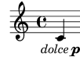
- Les petites capitales s’obtiennent désormais en réglant
font-variantsursmall-caps, plutôt qu’en fixantfont-shapeàcaps. Dans la mesure où la raison d’être defont-shapeest de pouvoir accéder à l’italique, ce changement rend possible l’utilisation conjointe de petites capitales et de l’italique. - La propriété
font-seriesest désormais plus flexible et accepte des valeurs telles quesemiboldetlighten plus des seulesnormaletbold.La valeur
mediumest désormais une valeur intermédiaire entrenormaletboldplutôt qu’un équivalent denormal. Par conséquent, la commande de markup\mediuma été renommée en\normal-weight. - La nouvelle propriété
font-stretchpermet de sélectionner une fonte resserrée ou expansée. - Le texte d’un objet
VoltaBrackettel que défini par un\override Score.VoltaBracket.text = …ou\set Score.repeatCommands = …n’est plus automatiquement rendu dans une fonte musicale ; il faut pour cela utiliser la commande de markup\volta-numbersur les parties qui le nécessitent. Il faudra donc, par exemple, convertir\set Score.repeatCommands = #'((volta "2, 5"))
en
\set Score.repeatCommands = #`((volta ,#{ \markup { \concat { \volta-number 2 , } \volta-number 5 } #})) - Dans un markup, les doigtés (
\markup \finger) et chiffrages d’accord (\markup \figured-bass) sont désormais adaptés à la taille du texte normal en présence d’un\fontsize.myText = \markup { The fingering \finger { 5-4 } for a \figured-bass { 7 "6\\" } … } \myText \markup\fontsize #6 \myText
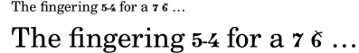
Le comportement antérieur peut être retrouvé en activant les variables globales
legacy-figured-bass-markup-fontsizeetlegacy-finger-markup-fontsize, soit :#(set! legacy-figured-bass-markup-fontsize #t) #(set! legacy-finger-markup-fontsize #t) myText = \markup { The fingering \finger { 4-5 } for a \figured-bass { 5+ 6 } … } \myText \markup\fontsize #6 \myText
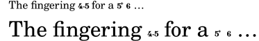
- Pour plus de clarté, la commande de markup
\romana été renommée en\serif. Aussi, pour modifier une propriétéfont-familyréglée àsansoutypewriter, il faut la définir àserif, non plus àroman. - La commande de markup
\texta été supprimée. Doivent être utilisées en remplacement les commandes\serif,\sansou\typewriter. Si ces commandes permettaient de définir le style de fonte uniquement lorsqu’une fonte textuelle était utilisée (non une fonte musicale comme pour les nuances), elles déterminent désormais à la fois le style de fonte et l’utilisation d’une fonte textuelle. - La taille de la police utilisée par la commande de markup
\volta-numbera été réduite afin de mieux s’harmoniser avec le texte environnant. Par la même occasion, la taille du crochet de reprise (qui utilise\volta-numberpour son formatage par défaut) a été augmentée en proportion inverse afin de compenser dans les cas habituels. - Certains glyphes, tels que « one » ou « accidentals.hufnagelM1 », de la fonte Emmentaler avaient une boîte englobante excessivement large en raison d’un bogue dans la chaîne de production des fontes. Ceci est désormais corrigé, mais certaines différences pourraient apparaître dans la typographie puisque des boîtes englobantes plus étroites peuvent entraîner une typographie plus resserrée.
- De nouvelles commandes pour imprimer une représentation textuelle des
altérations ont été ajoutées :
\text-doubleflat,\text-flat,\text-natural,\text-sharp,\text-doublesharpainsi que de manière plus générale\text-accidental.\markuplist \override #'(padding . 1) \table #'(-1 -1 -1 -1 -1 -1) { "Altérations pour du texte :" \text-doubleflat \text-flat \text-natural \text-sharp \text-doublesharp "Altérations dans la musique :" \doubleflat \flat \natural \sharp \doublesharp }
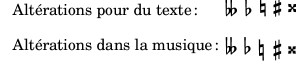
- La commande de markup
\circleaccepte désormais une propriétébbox. Lorsque cette propriété est activée, la boîte englobant ses argument est utilisée pour définir le diamètre du cercle.\markup { \circle { \center-column { "court" "court" "très très long" } } \override #'(bbox . #t) \circle { \center-column { "court" "court" "très très long" } } }
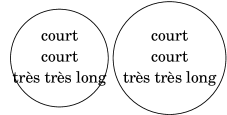
- La commande
\tagest désormais fonctionnelle dans les environnements\markup. De nouvelles commandes de markup sont ajoutées pour filtrer (\keep-with-taget\remove-with-tag) et insérer des makups dans un contexte de markup (\push-to-tag,\append-to-taget\replace-with-tag) ou dans un contexte musical (\pushToTagMarkup,\appendToTagMarkupet\replaceWithMarkup).test = \markup { \tag #'a a \tag #'b b c } music = \relative { c'^\test c c c } \keepWithTag #'a \music \removeWithTag #'a \music \pushToTagMarkup #'a push \music \appendToTagMarkup #'a append \music \replaceWithTagMarkup #'a replacement \music \markup { \keep-with-tag #'a \test } \markup { \remove-with-tag #'a \test } \markup { \push-to-tag #'a push \test } \markup { \append-to-tag #'a append \test } \markup { \replace-with-tag #'a replacement \test } \markup { \keep-with-tag #'a \score { \music } }
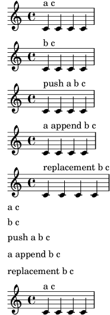
- Les deux nouvelles commandes
\pad-x-leftet\pad-x-rightse comportent comme\pad-x, à ceci près qu’elles appliquent un décalage horizontal sur un seul des côtés du markup.
Nouveautés en matière de notation spécialisée
Améliorations pour la musique vocale
- Lorsque des paroles s’alignent sur une mélodie, des lignes d’extension
peuvent s’ajouter automatiquement à la syllabe se terminant sur un
mélisme.
\relative { d'4 e f4 g8( f e4 d c2) } \addlyrics { \set autoExtenders = ##t A me -- lis -- ma. }
![[image of music]](a3/lily-7737a95d.png)
Améliorations pour instruments à portées multiples
- Il n’est désormais plus nécessaire de désactiver les ligatures
automatiques dans le cadre d’un
\crossStaff.
Améliorations pour les cordes non frettées
- Les indications
\upbowet\downbowsont désormais correctement inversées lorsque placées sous la portée. En conséquence, les glyphesscripts.upbowetscripts.downbowont été respectivement renommés enscript.uupbowetscripts.udownbow, et les glyphes inversés nommésscripts.dupbowetscripts.ddownbow.\relative c' { f4^\downbow f^\upbow f_\downbow f_\upbow }
![[image of music]](1c/lily-d66aef31.png)
Améliorations pour les cordes frettées
- Les réglages par défaut des étiquettes de diagramme de fret ont changé.
- − La valeur par défaut de
fret-label-vertical-offsetest fixée à -0.5, ce qui a pour effet de centrer l’étiquette dans l’espace du fret. - − Le format numérique par défaut est désormais
'custom, avec un format de chaîne"~dfr"(résultant en ‘3fr’ par exemple), au lieu de'roman-lower.
- − La valeur par défaut de
- Deux nouvelles options sont disponibles pour les
fret-diagram-details:- −
string-overhangpermet de définir l’extension des lignes de corde au-delà de la ligne de dernier fret, en multiples defret-distance. La valeur par défaut est de 1. - −
barre-thicknessdéfinit l’épaisseur de la ligne du barré, en multiples dedot-radius. Elle n’est définit que pourbarre-type=straight, avec une valeur par défaut de 1.
- −
Améliorations pour la notation des accords
- Désormais, les noms d’accord sont par défaut toujours affichés en
anglais et ne dépendent plus de
\language. De la même manière, les commandes telles que\germanChordsne dépendent plus de\language.Ceci pourrait causer des différences dans l’affichage des noms d’accord.
- La nouvelle commande
\englishChordspermet de revenir aux noms d’accord en anglais. - Certaines fonctions Scheme en lien avec les noms d’accord ont été
renommées.
ancien nouveau note-name->stringpitch->namealteration->text-accidental-markupaccidental->text-markupnote-name->markupchord-name:markupchord-name->german-markupchord-name:german-markupnote-name->german-markupchord-name:german-lowercase-name-markupchord-name->italian-markupchord-name:italian-markupconvert-lygère ceci automatiquement. - Two new Scheme functions related to chord names are now available:
pitch->alterationreturns the accidental for a given pitch and language;chord-name:name-markupreturns note name markup for a given pitch and language. - LilyPond suit désormais plus rigoureusement la nomenclature de
nommage des accords par Ignatzek. Ceci annule des modifications
intervenues fin 2011 avec la version 2.15.21, et que l’on pourrait
maintenant qualifier incorrects ou ambigus.
oldException = { <c e g b fis'>-\markup \super "lyd" } chExceptions = #(append (sequential-music-to-chord-exceptions oldException #t) ignatzekExceptions) music = { <c e g d'>1 | <c es g f'> | <c e g b fis'> } \new StaffGroup \with { instrumentName = "old:" } << \new ChordNames \with { chordNameExceptions = #chExceptions additionalPitchPrefix = "" } \music \new Voice \transpose c c' \music >> \new StaffGroup \with { instrumentName = "new:" } << \new ChordNames \music \new Voice \transpose c c' \music >> \layout { indent = 1\cm line-width = 9\cm ragged-right = ##f }
![[image of music]](08/lily-1f81ca9f.png)
Améliorations pour les notations anciennes
- Pour plus de cohérence avec les clefs anciennes, cinq nouvelles clefs
mensurales sont disponibles :
"mensural-f2","mensural-f3","mensural-f4"(identique à"mensural-f"),"mensural-f5","mensural-g1"et"mensural-g2"(identique à"mensural-g"). - La métrique et le style d’altération à l’armure d’un contexte
PetrucciStaffsont désormais identiques à ceux d’unMensuralStaff. - Les ligatures mensurales blanches prennent désormais en charge quelques
cas rares (semi-brève isolée ou non), et autorisent des affinages
permettant d’indiquer quelque hampe non nécessaire.
\score { \relative { \set Score.timing = ##f \set Score.measureBarType = #'() \override NoteHead.style = #'petrucci \override Staff.TimeSignature.style = #'mensural \clef "petrucci-c4" \[ a1 g f e \] \[ a1 g\longa \] \[ \tweak left-down-stem ##t a\breve b \tweak right-down-stem ##t g\longa \] \[ \tweak right-down-stem ##t b\maxima \tweak right-up-stem ##t g\longa \] } \layout { \context { \Voice \remove Ligature_bracket_engraver \consists Mensural_ligature_engraver } } }
![[image of music]](49/lily-8d1e12ca.png)
- L’utilisation du fichier gregorian.ly est désuète. Bien que
toujours distribué pour raison de compatibilité ascendante, son
inclusion devrait être remplacée par l’utilisation d’un contexte
VaticanaScore, avec si besoin des adaptations manuelles dans le bloc\layout. Un code tel que\include "gregorian.ly" \score { \new VaticanaStaff { ... } }devrait devenir
\new VaticanaScore { \new VaticanaStaff { ... } } \layout { indent = 0 ragged-last = ##t }
Améliorations pour les musiques du monde
- La langue de saisie « arabic » est dépréciée. Bien que toujours fonctionnelle pour des raisons de rétrocompatibilité – si l’on charge hel-arabic –, il est recommandé d’utiliser « english », « italiano » ou votre langue de saisie préférée.
| [ << Nouveautés en matière de notation spécialisée ] | [Top][Contents] | [ >> ] |
| [ < Améliorations pour les musiques du monde ] | [ Up: Top ] | [ > ] |
Autres améliorations diverses
- La commande
\tempoaccepte désormais des valeurs rationnelles exactes. Le formateur par défaut arrondi au quart le plus proche ; la propriété de contextetempoCountPrecisionpermet de le contrôler.\fixed c' { \once \set Timing.tempoCountPrecision = #1/1000000 \tempo 4 = #200/3 g4 e2 f4 }
![[image of music]](ea/lily-774bcc32.png)
- La nouvelle fonction Scheme
ly:parser-define-once!définit une variable qui ne l’aurait pas déjà été. - La propriété de contexte
timeSignatureFractionest déclarée obsolète, au profit detimeSignature. La nouvelle propriété accepte des métriques subdivisées ou alternatives, en plus des simples fractions jusqu’à présent prises en charge. Accéder à l’ancienne propriété résultera pour la nouvelle en une simple fraction et déclenchera un avertissement. -
(make-music 'Music)et(make-music 'Event)créent désormais des expressions musicales dont la propriétévoidest définie par défaut à#t. La fonctionempty-musica été supprimée au profit de(make-music 'Music). Le nouveau prédicatunspecified-music?reconnaît toute expression musicale affublée d’unvoid. - La nouvelle fonction Scheme
ly:number->durationconvertit une durée exprimée en unité relative de ronde enly:duration. Le log, le nombre de points et le facteur d’échelonnement sont déterminés automatiquement. - Les commandes de markup
\hspaceet\vspacepermettent d’insérer de l’espace, qui peut être négatif. Les autres objets sont déplacées en conséquence. Ce déplacement peut s’indiquer par une flèche qui s’imprimera à l’aide de la nouvelle commandeannotate-moving. Il est à noter que ces flèches ne reflètent pas l’étendue réelle des objets créés par\vspaceet\hspace; on pourrait utiliser\boxà cette fin.\markup { left \annotate-moving \hspace #4 right \column { top \annotate-moving \vspace #-4/3 bottom } }
![[image of music]](dd/lily-c62f16fc.png)
- La nouvelle commande
\contextPropertyCheckvérifie qu’une propriété est définie à une valeur attendue ou n’est pas définie dans un contexte spécifique. - Un certain nombre de propriétés de contexte qui jusqu’à présent
reposaient sur
ly:momentprennent dorénavant des nombres rationnels. Afin de faciliter cette transition, chaque propriété numérique est appairée avec une propriété de secoursly:moment. L’utilisation d’une propriété de secours accède de manière transparente à la propriété numérique et déclenche un avertissement.Propriété de contexte obsolète Nouvelle propriété de contexte baseMomentbeatBasecompletionUnitAsMomentcompletionUnitgridIntervalAsMomentgridIntervalmeasureLengthAsMomentmeasureLengthminimumPageTurnLengthpageTurnMinimumRestLengthminimumRepeatLengthForPageTurnpageTurnMinimumRepeatLengthproportionalNotationDurationAsMomentproportionalNotationDurationtempoWholesPerMinuteAsMomenttempoWholesPerMinutetupletSpannerDurationAsMomenttupletSpannerDurationvoltaSpannerDurationAsMomentvoltaSpannerDuration -
\tempo dur = min - maxdéterminait la propriété de contextetempoWholesPerMinuteaprès arrondi à l’entier le plus proche. Ceci n’est plus le cas. Par voie de conséquence, le tempo MIDI peut être modifié dans certains cas. - Les fonctions Scheme
duration-lengthetly:duration-lengthont été respectivement renommées enly:duration->numberetly:duration->moment. - La nouvelle fonction Scheme
ly:parser-append-to-include-pathajoute son argument au chemin de recherche courant de l’analyseur. - La valeur de la propriété de contexte
timeSignatureSettingsutilise désormais le symbolebeatBaseen remplacement debaseMoment.convert-lyn’est pas en mesure de traiter ce changement. - L’inclusion d’images PNG est désormais possible à l’aide de la commande
de markup
\image. Ceci vient en supplément de la commande\epsfilepour les images EPS.La commande
\imagetraite aussi bien les images PNG que EPS, à ceci près que la commande\imageinsère un fond blanc, contrairement à\epsfile. - La nouvelle commande de markup
\qr-codepermet d’insérer un QR-code de la taille spécifiée pour l’URL correspondante. Ceci peut servir à fournir un lien vers le site du compositeur ou de l’éditeur, ou bien vers les sources LilyPond ou des enregistrements, etc.\markup \qr-code #10 "https://lilypond.org"
![[image of music]](9d/lily-7878c139.png)
- Des parenthèses pour texte de markup ont été ajoutées aux fontes Emmentaler, pour s’harmoniser avec les nombres (contrairement à celles déjà disponibles pour les altérations).
- Ont été ajoutés à la fonte Emmentaler les glyphes figure-dash (U+2012), en-dash (U+2013) (quart de catradin) et slash (U+002F).
- Une espace pour nombres (U+2007), une espace fine (U+2009) et une espace ultrafine (U+200A) ont été ajoutées à la fonte Emmentaler.
- L’option
-dinclude-settingspeut désormais apparaître à plusieurs reprises, afin de pouvoir inclure différentes feuilles de style. - Dans l’utilisation conjointe de LaTeX et
lilypond-book, les images au fil du texte sont désormais décalées verticalement. Ce décalage peut se contrôler en ligne de commande à l’aide de l’option --inline-vshift et, localement, en ajoutantinlineen argument aux options de l’extrait. - Il est possible d’utiliser en ligne de commande les diverses options de
musicxml2lyen tant qu’options de la commandemusicxmlfiledelilypond-book. Bien que disponible depuis la version 2.15.9 publiée en 2011, ceci n’était jusqu’alors pas documenté. - Deux nouvelles options en ligne de commande font leur apparition :
-dfirst and -dlast. Elles sont équivalentes aux
réglages respectifs de
showFirstLengthetshowLastLengthdans un fichier LilyPond. Par exemple, taperlilypond -dlast=R1*5 ...
aura pour résultat que LilyPond générera seulement les cinq dernières mesure (partant du principe d’une métrique à 4/4).
- Est désormais disponible un nouveau manuel constituant un index de tous les objets graphiques (grobs) de LilyPond. Il est basé sur le travail de Joram Berger pour LilyPond 2.19.
- LilyPond prend en charge les annotations au fil du texte, autrement dit des sortes de notes de bas de page entre les systèmes. Bien que ce ne soit pas nouveau, puisque disponible depuis la version 2.15.17 publiée en 2011, cette possibilité n’était pas si stable et manquait de documentation jusqu’à présent.
- Le script
lilysonga été supprimé. En dehors du fait qu’il ne disposait d’aucune documentation, il n’était plus maintenu depuis fort longtemps. De plus, il reposait sur un programme externe de synthèse vocale –festival– laissé à l’abandon. - Deux nouveaux styles sont disponibles pour la propriété d’objet
graphique
space-alist:shrink-spaceetsemi-shrink-space. Ils contractent les espaces au lieu de les étendre. Ils sont aussi directement utilisés par LilyPond afin d’améliorer le formatage des portées resserrées. - Le binaire
lilyponddispose d’une nouvelle option en ligne de commande, -dstaff-size, pour régler la taille globale des portées. Elle est équivalente à la présence d’unset-global-staff-sizedans un fichier LilyPond. - En remplacement des fonctions
\bookOutputNameet\bookOutputSuffix, nous recommandons dorénavant l’utilisation des variables de papieroutput-filenameetoutput-suffix. Bien que les premières restent pleinement fonctionnelles, ces dernières sont plus cohérentes et facilement compréhensibles, notamment si elles sont combinées avec des variables de papier prédéfinies. - La propriété
Stem.details.lengthsaccepte maintenant des paires en tant qu’éléments de liste. Ceci permet de définir séparément les longueurs de hampe ascendante ou descendante. - La fonction
ly:self-alignment-interface::aligned-on-x-parent– utilisée par de nombreux objets graphiques pour calculer leur x-offset – écoute désormais la nouvelle propriétéX-alignment-extentdePaperColumn. Activée par défaut, elle fournit une largeur de secours au grobPaperColumndans le cas où il ne contiendrait pas de tête de note. Ceci permet d’aider à l’alignement des scripts de nuance attachés à des silences invisibles, entre autres.music = \new Staff << { f'2 g'2 } { s4\f s\f s\f s\f } >> \score { \music } \score { \music \layout { \context { \Score \override PaperColumn.X-alignment-extent = ##f } } }
![[image of music]](0b/lily-56eaf92c.png)
- Les objets
BassFigureContinuationprennent désormais en charge lahorizontal-line-spanner-interface. La propriétépaddinga été remplacée par des sous-propriétés correspondantes dansbound-details. - La commande de markup
\align-on-otheraccepte désormais la valeur#fpour l’alignement, indiquant le point de référence d’un markup. - Une nouvelle fonction
\withRelativeDirest désormais disponible pour les commandes de markup qui incluent des fichiers lorsque ces fichiers devraient se trouver relativement au fichier source. Par exemple :\markup { \image #X #3 \withRelativeDir "test.png" } - Le positionnement des crochets horizontaux d’analyse a été amélioré.
En particulier, l’objet
HorizontalBracketa désormais une valeur deoutside-staff-priorityfixée à 800. Par conséquent, il se pourrait que des crochets imbriqués voient leur positionnement modifié. Ceci peut se corriger en ajustant les valeurs deoutside-staff-prioritypar un\tweak, tout en sachant que le crochet externe doit garder une valeur de priorité supérieure. - La nouvelle fonction Scheme
to-staff-spacepermet de convertir des dimensions absolues (exprimées en diverses unités) en unités d’espace de portée. Par exemple :top-markup-spacing.basic-distance = #(to-staff-space 2 'cm) % l'unité par défaut est le point (pt) \markup \override #`(baseline-skip . ,(to-staff-space 20)) \column { foo bar } - Les deux nouvelles fonctions de markup
\abs-hspaceet\abs-vspacepermettent de déterminer des dimensions absolues qui subsistent quelle que soit la taille de portée en cours. - Les données émises par l’option en ligne de commande -dshow-available-fonts sont désormais envoyées sur la sortie standard.
- La fonction
ly:font-config-display-fontsaccepte désormais un argument optionnel pour sélectionner le port de sortie. - La gestion des options Scheme en ligne de commande gagne en
robustesse. Quelques changements mineurs ont été rendus nécessaires par
cette nouvelle implémentation.
- − Sur la ligne de commande, l’argument à l’option -dpaper-size ne
nécessite plus d’être mis entre guillemets. En d’autres termes,
mentionner
-dpaper-size=a3est tout à fait valide. - − L’option pixmap-format requiert désormais une valeur sous forme
de chaîne, non plus un symbole. Rien ne change pour la ligne de
commande, mais un appel tel que
#(ly:set-option 'pixmap-format 'pngalpha)
devra être changé en
#(ly:set-option 'pixmap-format "pngalpha")
Il en va de même pour les options separate-page-formats et tall-page-formats. Notez que
convert-lyse charge d’effectuer la modification automatiquement.
- − Sur la ligne de commande, l’argument à l’option -dpaper-size ne
nécessite plus d’être mis entre guillemets. En d’autres termes,
mentionner
- La
side-position-interfacedispose de deux nouvelles propriétés,X-paddingetminimum-X-space, aux fins de contrôler le décalage horizontal et la distance minimale d’un grob avec son objet parent, indépendamment du décalage vertical et de la distance minimale. Ceci se révèle utile pour des objets tels queFingeringqui peuvent avoir un attachement à une tête de note tant dans la verticalité que l’horizontalité, et dont le décalage dans chacun des axes peut requérir des valeurs différentes. -
\pushContextPropertyet\popContextPropertysont deux nouvelles commandes permettant de manipuler les propriétés de contexte. La première insère la valeur courante dans une pile, alors que la seconde supprime cette valeur de la pile et restaure la valeur initiale.{ c' \pushContextProperty Staff.fontSize \set Staff.fontSize = 3 c' \pushContextProperty Staff.fontSize \set Staff.fontSize = 6 c' \popContextProperty Staff.fontSize c' \popContextProperty Staff.fontSize c' }
![[image of music]](1d/lily-f312dbf7.png)
- La nouvelle propriété d’objet graphique
whiteout-colorpermet de définir la couleur de mise en surbrillance. Dans la même veine, la commande de markup\whiteoutattend une propriétécolorpour faire de même. - Le script
musicxml2lya été complètement remanié afin de mieux convertir les fichiers MusicXML en LilyPond. Il prend désormais en charge plus de fonctionnalités et éléments MusicXML et tente d’être plus fiable dans la conversion afin de respecter au mieux l’apparence originelle.Voici une liste des quelques changements notables, exception faite des corrections de bogue.
- − Le script est beaucoup plus rapide.
- − Le chevauchement et l’imbrication des liaisons fonctionnent comme on est en droit de s’y attendre.
- − Meilleure prise en charge automatique pour contrecarrer l’infâme ticket 34 de LilyPond (problème de synchronisation avec une appoggiature en début de pièce avec plusieurs portées).
- − Prise en charge des trémolos sur deux hampes et n-olets imbriqués.
- − Prise en charge de la couleur et de la taille de fonte pour la plupart des éléments MusicXML. Une nouvelle option en ligne de commande --dynamics-scale aide à compenser les différences de taille des glyphes de nuance pour diverses fontes musicales.
- − Prise en charge correcte des fins d’octaviation pour les fichiers
MusicXML créés par Finale. Le script vérifie l’élément
<software>pour déterminer le logiciel de notation utilisé. On peut y déroger si nécessaire à l’aide de l’option en ligne de commande --ottavas-end-early. - − L’option --shift-meter a été remplacée par l’option --shift-durations qui utilise une syntaxe plus simple.
- − La nouvelle option en ligne de commande --no-tagline supprime la génération de la tagline de LilyPond.
- − La nouvelle option en ligne de commande --book encapsule
la partition de premier niveau dans un
\book. - − Lorsque des éléments
<credit>sont présents, ils alimentent les champs du bloc\headerde LilyPond au lieu des métadonnées telles que<work-title>ou<creator>. - − La nouvelle option en ligne de commande --credit-page
spécifie la page où LilyPond devra récupérer les données
<credit>pour alimenter le bloc\header. - − Tous les éléments de métadonnée qui n’ont pas de correspondant
dans les champs standards de
\header(et qui ne sont pas ignorés comme le type « page number ») sont rendus dans des champs au nom plus cohérent : le préfixe ‘id: ’ est ajouté pour les éléments de<identification>, ‘credit: ’ pour les éléments de<credit>, et le nom de l’élément MusicXML (sans préfixe) dans tous les autres cas. Par conséquent, certains champs (non utilisés) prennent un nouveau nom.ancien nouveau movementnumbermovement-numberencodingsoftwareid: softwareencodingdateid: encoding-dateencoderid: encoderencodingdescriptionid: encoding-descriptionsourceid: source - − Les numéros de mesure insérés en commentaire dans le fichier LilyPond créé sont conformes, leur valeur indiquant la mesure précédente.
- La commande de markup
\page-refdispose d’une nouvelle propriétéx-aligndestinée à contrôler l’alignement horizontal de la jauge de remplacement.\markup { \box \page-ref #'foo "???" "?" " aligné à droite (par défaut)" } \markup { \box \override #`(x-align . ,LEFT) \page-ref #'foo "???" "?" " aligné à gauche" } \markup { \box \override #'(x-align . -2.5) \page-ref #'foo "???" "?" " repoussé sur la gauche" }
![[image of music]](e1/lily-599c7020.png)
- La propriété
ledger-extrapeut désormais se régler aussi à partir de l’objetNoteHead.\score { { c'''1 \tweak ledger-extra #4 c'''1 c'''1 } }
![[image of music]](27/lily-7851e4ac.png)
- Pour les objets graphiques
NonMusicalPaperColumn, la sous-propriétébottom-spacedeline-break-system-detailsa été renommée enbottom-padding. Alors qu’elle existait depuis la version 2.13.4 sortie en 2009, cette sous-propriété n’était pour l’instant pas documentée. - Il est désormais possible de modifier des regroupements de balises créés
par
\tagGroupou\tagGroupRef, à l’aide des commandes\resetTagGroups,\resetTagGroup,\addToTagGroupet\removeFromTagGroup. - La langue de saisie – telle que définie par
\language– est accessible au travers de la la nouvelle variable Schemeinput-language, en tant que symbole. - La nouvelle fonction
\breakAlignInsertfacilite la modification de l’ordre des éléments de notation tels que clefs, métriques, barres de mesure, etc. Jusqu’à présent, ceci demandait de redéfinir le vecteurScore.BreakAlignment.break-align-orders.{ g'1 \key f \major g' \breakAlignInsert staff-bar after key-signature \key g \minor g' }
![[image of music]](67/lily-49b933a1.png)
- L’option de sortie -dcrop tient désormais compte de tous les stencils pour déterminer la boîte englobante. Ceci peut modifier la taille des sorties rognées.
- Les fonctions suivantes, qui étaient dépréciées depuis la version
2.13.19, ont été supprimées :
\deprecatedcresc,\deprecatedendcresc,\deprecateddimet\deprecatedenddim.
Pour des annonces plus anciennes, rendez-vouz aux pages https://lilypond.org/doc/v2.22/Documentation/changes/, ou remontez à l’index de la documentation.